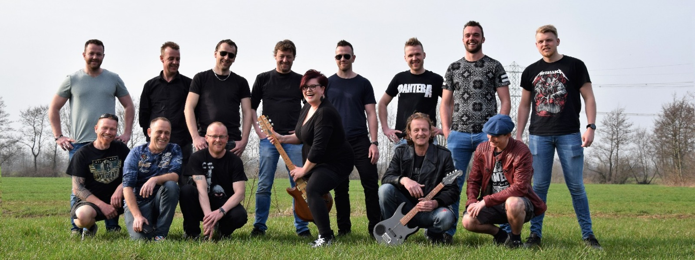

Lang gewacht en toch aanstaande: de eerste SOA. Een jaar of 10 geleden ontstond het idee om een festival met rock- en metalmuziek op te zetten. Al filosoferende (voorzover daar wegens offeringen aan Bacchus al sprake kon zijn) ontstond toen de naam SOA ofwel Surhuzum Open Air. In de daarop volgende jaren kwam SOA op bijna elk feestje wel eens ter sprake, maar dit leidde steeds niet tot concrete dingen. Wel raakten steeds meer enthousiastelingen besmet en bij steeds meer mensen begon het te kriebelen. Na een incubatietijd van 10 jaar wordt SOA nu, mede dankzij onze sponsoren, op 7 juli 2018 dan eindelijk keiharde realiteit.
SOA zal worden gehouden in het buitengebied van Surhuizum in een buurtschap wat in de volksmond “de Pûs” (fonetisch: de Poes) wordt genoemd (routebeschrijving hier). De Pûs is een plek waar SOA natuurlijk graag wil zijn…. Midden in het natuurrijke onbeschermde boomwallenlandschap van de Fryske Walden zal het geweld op zaterdag 7 juli vanaf 15.00 uur los barsten. Het terrein gaat vanaf 14.00u. open voor publiek.
Een goede SOA krijg je niet zonder een goed voorspel. Op vrijdagavond is er een darttoernooi met muzikale omlijsting van de Release Musicshow. Darten, kijken naar darten, chillen, dansen en eten en drinken: alles is mogelijk op vrijdagavond. Op vrijdag is de entree gratis. Voor meer info kijk bij Foreplay.
SOA is in beginsel een openluchtfestival. Dat betekent niet dat je met het kopen van kaarten tot de laatste dag zou moeten wachten om te kijken wat het weer op 6 en 7 juli gaat doen. Als je voor de veiligste weg kiest, loop je kans om SOA mis te lopen. Als de atmosferische omstandigheden, zoals bijvoorbeeld veel nattigheid in de Pûs, een openluchtconcert onmogelijk maken, zullen er zoveel mogelijk voorzieningen worden getroffen waardoor het festival vrijwel zeker kan doorgaan. Koop dus op tijd je kaarten via de ticketshop op deze site. In combinatie met je kaart kun je ook een uniek T-shirt (met 3,50 korting) en/of consumptiemunten bestellen.
Tussen 15.00 en 0.00 uur zullen er in totaal maar liefst 7 bands in het hardere genre (rock, hardrock en metal) optreden. Enkele rockcoverbands en enkele tribute-bands van formaat. De complete line-up en informatie over de bands kun je hieronder bekijken.
Moet je van ver komen en wil je graag overnachten? In de buurt zijn overnachtingsmogelijkheden voor tenten en andere kampeermiddelen. Neem voor verdere info over de camping contact op met camping@soa.frl
Voor meer en veilige informatie uit betrouwbare bron raden we je aan om ons op facebook ( www.facebook.com/soa.frl) te volgen. Staat daar niet wat je zoekt? Stuur gerust een mail naar onze SOA-helpdesk: info@soa.frl.
Iedereen die kaarten koopt of het festivalterrein bezoekt conformeert zich daarmee aan onze huisregels.
De volgende bands zijn bevestigd. Binnenkort is hier ook het speelschema te downloaden...

Damaged Justice
Damaged Justice is a Dutch Metallica tribute dedicated to recreate the sound, feel and visual experience of the real thing. Anyone who has seen Metallica live knows how impressive the show is, we cut no corners in our effort to bring this experience to your event. The right instruments and proper gear and of course hours, days, weeks, months and years of practice is what we bring to make it possible! See our individual pages for a detailed equipment list. (our legendary bass rig utilizes the exact same equipment used in Metallica’s rigs and can reproduce all classic Burton/Newsted sounds) We have done many great shows in the past and are eager to beef up your event!

Highway To Rosie
Highway To Rosie is inmiddels een begrip in de tribute wereld. Menig festival, kroeg, motortreffen werd al opgeluisterd door deze alom geprezen coverband. Tijdens de shows van deze band knalt de energie van het podium af. Door de dijk van een sound, de groove van AC/DC, de frontman met de uitstraling van Bon Scott en de gillende gitaarsolo’s zal je een optreden van deze tributeband niet snel vergeten. De mix van ballads, boogiewoogie, blues- en rocknummers worden met veel overtuiging gebracht.

The Troopers
Ben jij een echte Iron Maiden-fan? Kun je maar geen genoeg krijgen van "Run To The Hills" en "Wasted Years"? Ga je ook helemaal uit je dak bij "Number Of The Beast"? Dan wordt het tijd dat je de live show van The Troopers gaat meemaken! Deze ervaren rockformatie voert je mee op een indrukwekkende reis langs alle hoogtepunten van hun roemruchte idool: Iron Maiden!

Black Leash
Vijf allround rockers met een onbegrensde passie, grote muzikaliteit en een krachtige performance maken van Black Leash de Pearl Jam-tribute die haar naam eer aan doet. De band bestormde door de jaren heen al vele podia. Van grote festivals tot kleine kroegen en van drukbezochte evenementen tot stampvolle zalen… Black Leash zorgt altijd voor een onvergetelijke rockavond. De band brengt je “the best of both worlds” met een show waarin zowel oude als nieuwe nummers aan bod komen. Met hun jarenlange podiumervaring, een getalenteerde zanger die de sound van Eddie Vedder als geen ander weet te benaderen en een knetterende show weet Black Leash het publiek moeiteloos te overtuigen en mee te slepen in een dampende rockbeleving.

NBR
NBR speelt legendarische rockcovers uit de seventies. Led Zeppelin, Deep Purple, AC/DC, Black Sabbath, Queen en nog veel meer. NBR doet vervlogen tijden herleven met een totaal 70’s rockprogramma. een krachtige performance en muzikaal hoog niveau maken dat dit powerrocktrio garant staat voor de steaming rocknight die je niet wilt missen. NBR heeft de afgelopen 11 jaar op vele podia in nederland en zelfs duitsland opgetreden. NBR blaast al gedurende 11 jaar het stof tussen de podiumplanken vandaan en zal dat ook deze avond weer bewerkstelligen. laat de boel de boel, zeg alle afspraken af en wees voorbereid..... ....only for those about to rock,...... SO LET’S BANG YOUR HEAD!!!

Blazuh
Blazuh bestaat uit 6 personen met allen een passie voor de hardere muziek. Metal en hardrock is waar Blazuh garant voor staat. De set die bestaat uit nummers variërend van hardrock tot metal en een paar "verblaasduh" pop nummers. In januari hebben we de de publieksprijs binnengehaald bij de clash of the coverbands van Friesland, waar we natuurlijk trots op mogen zijn. Als de voorkeur uit gaat naar hard rock en metal, zowel oude als nieuwe, dan kan Blazuh je een mooie avond( of middag, hangt ervan af) bezorgen.

D.R.D.
D.R.D. maakte z’n debuut op Dokk’em openair 2016 bestaande uit een 3 man sterke kern aangevuld
met “vriendmuzikanten”. Ontstaan als gelegenheidsgrap was er bij de vaste kern een sterke klik en eind 2017 is D.R.D.
definitief in 5 man, 1 vrouw bezetting.
D.R.D. brengt een cover repertoire waar van alles mogelijk is. Heavy guitar is the key! Dus geen eentonige tribute van
een of andere band maar volop afwisseling. Er komen nummers voorbij van onder andere: Rage against the machine, Slipknot,
Faith no more, Skunk Anansie, Clawfinger, Stuck Mojo, Primus en meer.
Deze lowbudget-entertainment wordt knallend, enthousiast en met veel lol gepresenteerd waarbij de afwisseling van zangers
en zangeres een verrassende dynamiek brengen!

Release
Op vrijdagavond en zaterdag in de pauzes muziek van de Release Musicshow.
Sinds 1996 is de Release Musicshow een graag geziene gast op bruiloften, personeelsfeesten, dorpsfeesten,
tentfeesten etc. Met ruim 30.000 verschillende muziektitels in de computer weten de ervaren dj’s van
Release elk feest tot een feest te maken. Ook voor de verzorging van licht en geluid bij een evenement
of artiestenavond ben je bij Release aan het juiste adres!

De kaarten (e-tickets) kosten in voorverkoop slechts €12,50 per stuk. In de shop hieronder kun je zonder bijkomende servicekosten met Ideal betalen. Na betaling wordt het ticket naar het door jou opgegeven mailadres gestuurd. Elke koper krijgt per toegangsbewijs een uniek bedrukt SOA glas van SOA-bestendig polycarbonaat. Dit glas kun je tegen betaling bij de bar steeds weer opnieuw laten vullen. Het herbruikbare glas mag je na afloop mee naar huis nemen. Via de ticketshop kun je voor € 12,50 per stuk ook een uniek bedrukt SOA T-shirt reserveren. Meer info hierover vind je bij merchandise. In de shop kun je ook alvast een set van 10 consumptiemunten voor slechts 20 euro bestellen. Zowel het glas, het shirt en de munten zullen tegen inlevering van je uitgeprinte ticket bij de ingang aan je worden uitgereikt. Na betaling worden de kaarten je meteen per mail toegestuurd. Binnen een uur geen kaart ontvangen? Check je spambox of ongewenste mail of stuur een mail naar info@soa.frl.

Iedereen die een toegangsbewijs koopt krijgt een gratis bedrukt SOA-glas. Bij de bar kun je een extra of vervangend glas kopen tegen inlevering van 1 munt. Het glas mag je mee naar huis nemen, het is dus geen statiegeldglas.

Met het kopen van een toegangsbewijs kun je voor € 12,50 alvast je unieke bedrukte SOA-shirt reserveren. De shirts zijn in diverse maten verkrijgbaar. Het shirt is 100% katoen in de kleur antraciet en van premium kwaliteit (±190 g/m2). De gewenste maat kun je tijdens het bestelproces aangeven. Let op: De SOA-shirts zijn tot en met 20 juni te reserveren. Tijdens het festival zullen de shirts waarschijnlijk in beperkte mate te koop zijn. Ze zullen dan € 16,00 per stuk (ofwel 8 munten) gaan kosten. Wie zeker wil zijn van een uniek SOA-shirt en de korting van € 3,50 wil pakken moet dus op tijd bestellen. Per kaart kun je 1 shirt reserveren. Wie meer shirts wil reserveren kan gewoon een mailtje naar de SOA-helpdesk ( info@soa.frl) sturen.
De getoonde afbeeldingen zijn indicatief.
Het laatste nieuws over SOA staat het eerst op facebook. Blijf op de hoogte en wordt vrienden met ons op facebook, dan ontvang je automatisch alle updates!
Meer weten? Misschien ken je één van de bestuursleden van SOA. Zij kunnen je eventueel als eerste verder helpen. Het SOA-bestuur bestaat op dit moment uit de volgende personen (op de foto, van linksboven naar rechtsonder): Henk Borger, Auke Veenstra, Klaas Holthuis, Oeds Holthuis, Jan Borger, Pieter v.d. Veen, Jan Jaap Huizenga, Douwe Henk Hofman, Wim Borger, Eerde Jan Postma, Theunis Holthuis, Baukje Wijnsma, Otto Veenstra, Gerrit de Jong, Lars v.d. Schaaf (niet op de foto)

SOA wordt georganiseerd onder de vlag van de Stichting Release te Surhuizum, KvK nummer 41005506
Postadres: Postbus 129, 9230 AC Surhuisterveen, tel.
0512–352499.
Algemeen mailadres:
info@soa.frl
Mailadres camping:
camping@soa.frl
Mailadres darttoernooi:
darten@soa.frl
Mailadres sponsoring:
sponsors@soa.frl
Bankrekening IBAN: NL83RABO0327760397 t.n.v. Release inzake SOA Festival


{kind=link}